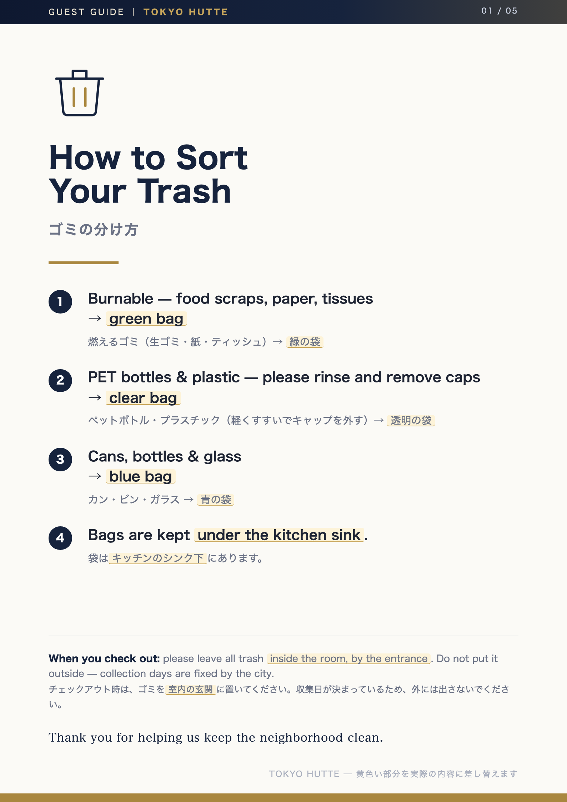
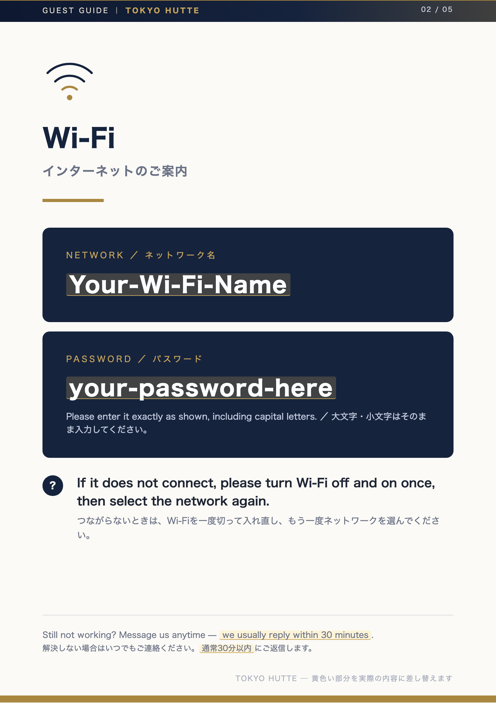
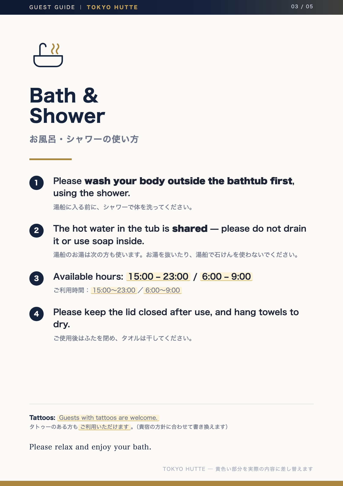
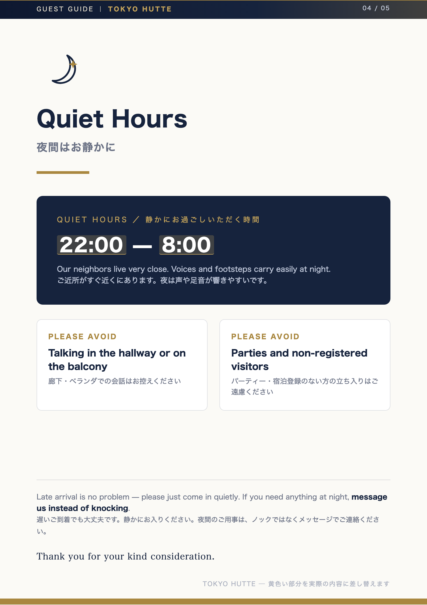
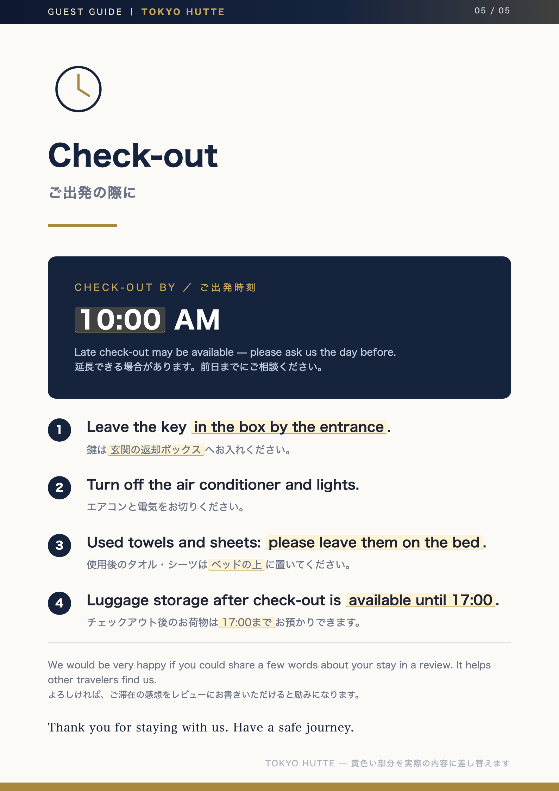

毎回おなじことを、英語で説明していませんか
ゴミの分け方、Wi-Fi、お風呂の入り方、夜の静けさ、チェックアウト。
外国人のお客様から聞かれることは、だいたいこの5つに集まります。
紙が1枚あるだけで、この説明がなくなります。東京都江戸川区にお越しになるお客様にも、
最初から日本語と英語の両方で伝わります。

01 ゴミの分け方 ／ How to Sort Your Trash

02 Wi-Fi ／ インターネットのご案内

03 お風呂・シャワー ／ Bath & Shower

04 夜間の静けさ ／ Quiet Hours

05 チェックアウト ／ Check-out
黄色い部分は、TOKYO HUTTE様の実際の内容（Wi-Fiのパスワード、ゴミ袋の色、チェックアウトの時刻など）に差し替えます。
お手元の情報をメールでいただければ、こちらで組み込んでお渡しします。
お渡しするもの（一式）
9,800円（税込）・買い切り／月額はありません
- 館内・室内の掲示物 5枚（日英併記・A4の印刷用PDF）
- ハウスルール 1枚（禁止事項・人数・喫煙・キャンセルなど）
- チェックイン案内文（道案内・鍵の受け取り・到着時刻の確認）
- 問い合わせへの返信文 20本（早めのチェックイン、荷物預かり、深夜到着ほか）
- レビューへの返信例 10本（高評価にも、厳しい評価にも）
3営業日でお届け・修正2回まで無料。データはそのままお持ちいただけます。
メールで相談する（無料）